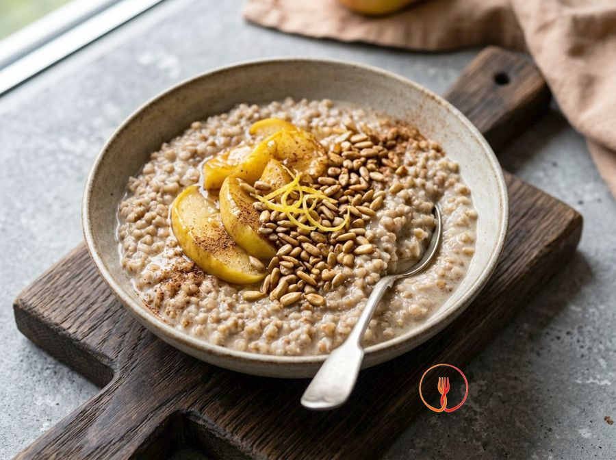

Apple and Sunflower Seed Buckwheat Porridge
A warm and nutritious breakfast that reimagines porridge using whole buckwheat, which is naturally gluten-free. The sweetness of the apples and the crunch of the toasted seeds make it perfect for the whole family.
Ingredients
- Hulled buckwheat240 g
- Rice milk (gluten and soy-free)850 ml
- Golden Delicious apples2 pcs
- Sunflower seeds40 g
- Maple syrup40 g
- Ground cinnamon5 g
- Organic lemon zest1 pcs
- Fine salt1 g
Allergens
None of the 14 main allergens in the ingredients.
Method
- Rinse the buckwheat under cold running water using a fine-mesh sieve for about 1 minute, until the water runs clear, to remove the bitter aftertaste of the saponins.
- In a non-stick pan, toast the sunflower seeds over medium heat for 3 minutes, moving them constantly until they release a nutty aroma and turn golden, which improves their digestibility.
- Pour the rice milk and the pinch of salt into a large saucepan, bringing it almost to the boil over a high heat for about 3-4 minutes.
- Add the buckwheat to the hot milk, turn the heat down to low and cover with a lid, leaving it to simmer for 8 minutes so the grains start to swell and absorb the liquid.
- While the buckwheat is cooking, peel the apples and cut them into 1 cm cubes to ensure quick and even cooking.
- Add the apple cubes, cinnamon, and grated lemon zest to the pan, stirring well to distribute the flavours, and cook for a further 5 minutes without the lid.
- Stir vigorously with a wooden spoon for the final 2 minutes to partially break the grains and release the starches, achieving a creamy and bound consistency.
- Turn off the heat, stir in the maple syrup and toasted sunflower seeds, and leave the preparation to rest, covered, for 2 minutes until it reaches the ideal density, similar to a soft pudding.
- Serve the porridge piping hot in individual bowls, checking that the buckwheat is tender but still has a slight bite.
Nutrition facts (estimate)
| Per serving (294 g) | Per 100 g | |
|---|---|---|
| Energy | 1527 kJ / 365.0 kcal | 519.4 kJ / 124.1 kcal |
| Protein | 9.0 g | 3.1 g |
| Carbohydrates | 68.0 g | 23.1 g |
| of which sugars | – g | – g |
| Fat | 7.0 g | 2.4 g |
| of which saturates | – g | – g |
| Fibre | – g | – g |
| Salt | – g | – g |
AI estimates based on average CREA / USDA data: indicative only, not a substitute for medical or dietitian advice.
Open the recipe in the app for the shopping list, ingredient sheets and nearby shops.